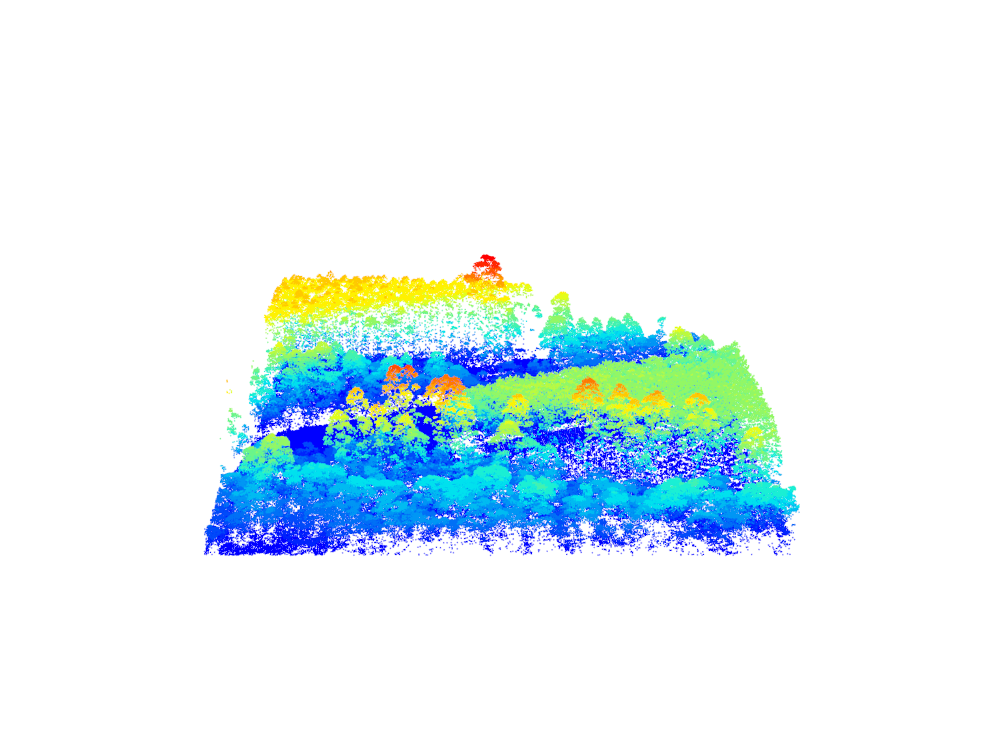
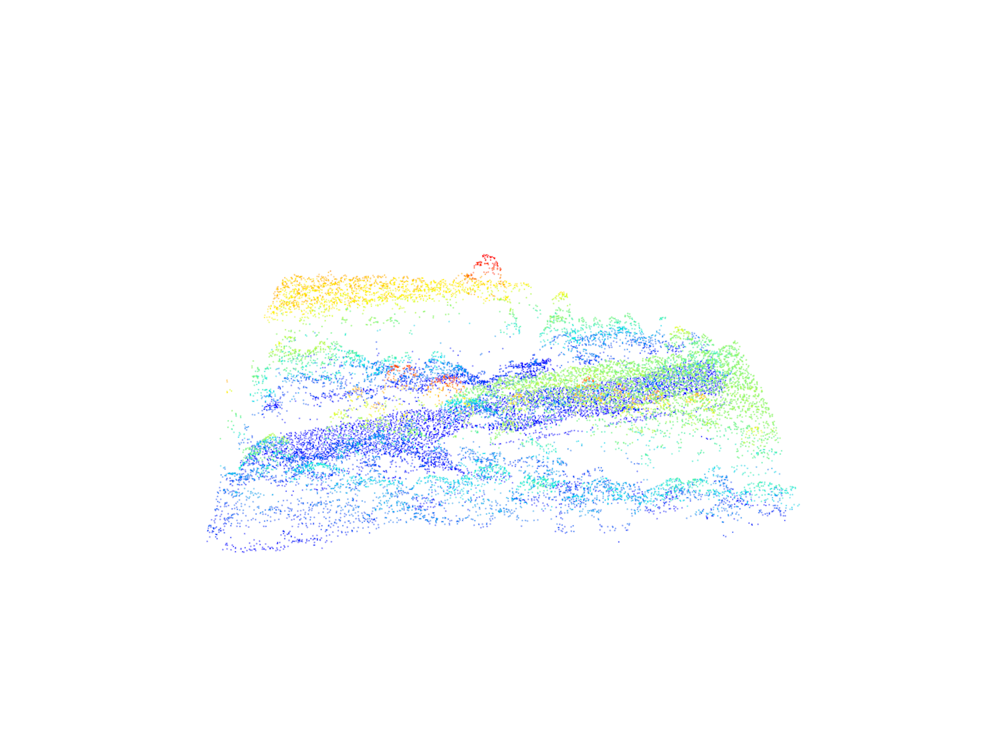
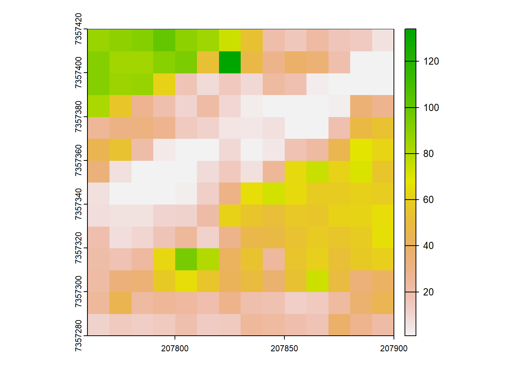
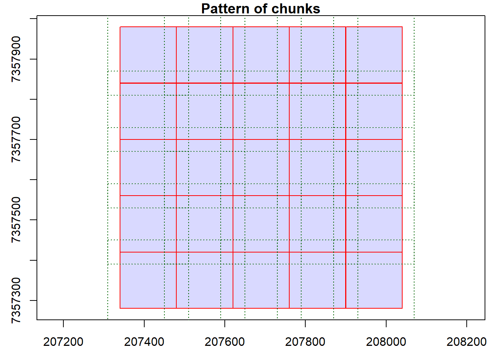
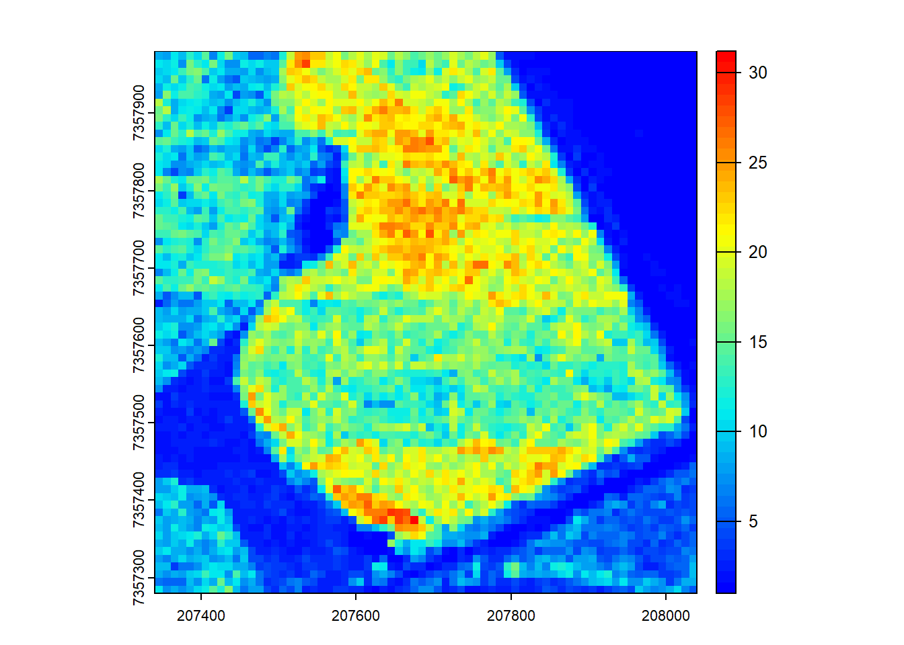

LAScatalog processing engine
Relevant resources:
Overview
This code showcases the LASCATALOG PROCESSING ENGINE, which efficiently applies various functions to LiDAR catalogs in parallel. It introduces the catalog_map() function for processing LiDAR data in a catalog. The code includes routines to detect trees and calculate metrics on the LiDAR catalog.
Environment
# Clear environment
rm(list = ls(globalenv()))
# Load packages
library(lidR)
library(terra)
library(future)Basic Usage
In this section, we will cover the basic usage of the lidR package, including reading LiDAR data, visualization, and inspecting metadata.
Basic Usage of lidR Package
This section introduces the basic usage of the lidR package for reading and visualizing LiDAR data, as well as inspecting metadata.
Reading and Visualizing LiDAR Data
We start by reading a LAS catalog and inspecting one of its LAS files.
# Read a LAS catalog
ctg <- readLAScatalog(folder = "data/Farm_A/")
# Inspect the first LAS file in the catalog
las_file <- ctg$filename[1]
las <- readLAS(las_file)
#> Warning: There are 167254 points flagged 'withheld'.
las
#> class : LAS (v1.2 format 0)
#> memory : 28.7 Mb
#> extent : 207340, 207480, 7357280, 7357420 (xmin, xmax, ymin, ymax)
#> coord. ref. : SIRGAS 2000 / UTM zone 23S
#> area : 19600 m²
#> points : 578.3 thousand points
#> density : 29.5 points/m²
#> density : 22.81 pulses/m²Visualizing LiDAR Data
We visualize the LiDAR data from the selected LAS file using a 3D plot.
# Visualize the LiDAR data in 3D
plot(las, bg = "white")catalog_map() Function
This section demonstrates the use of the catalog_map() function for efficient processing of LiDAR data within a LAS catalog.
Problem Statement
We start by addressing a common problem - how can we apply operations to LAS data in a catalog?
# Read a LAS file from the catalog and filter surface points
las_file <- ctg$filename[16]
las <- readLAS(files = las_file, filter = "-drop_withheld -drop_z_below 0 -drop_z_above 40")
surflas <- filter_surfacepoints(las = las, res = 1)Visualizing LiDAR Data
We visualize the selected LiDAR data, including both the original data and the surface points.
# Visualize the LiDAR data with a default color palette
plot(las)
# Visualize the surface points using a default color palette
plot(surflas)
Calculating Rumple Index
We calculate the rumple index using the pixel_metrics() function.
# Generate Area-based metrics
ri <- pixel_metrics(las = las, ~rumple_index(X,Y,Z), res = 10)
plot(ri)
Solution: LAScatalog Processing Engine
This section introduces the LAScatalog processing engine, a powerful tool for efficient processing of LAS data within a catalog.
Basic Usage of the catalog_map() Function
We demonstrate the basic usage of the catalog_map() function with a simple user-defined function.
# User-defined function for processing chunks
routine <- function(las){
# Perform computation
output <- pixel_metrics(las = las, func = ~max(Z), res = 20)
return(output)
}
# Initialize parallel processing
plan(multisession)
# Specify catalog options
opt_filter(ctg) <- "-drop_withheld"
# Apply routine to catalog
out <- catalog_map(ctg = ctg, FUN = routine)
#> Chunk 1 of 25 (4%): state ✓
#> Chunk 2 of 25 (8%): state ✓
#> Chunk 3 of 25 (12%): state ✓
#> Chunk 4 of 25 (16%): state ✓
#> Chunk 5 of 25 (20%): state ✓
#> Chunk 6 of 25 (24%): state ✓
#> Chunk 7 of 25 (28%): state ✓
#> Chunk 8 of 25 (32%): state ✓
#> Chunk 9 of 25 (36%): state ✓
#> Chunk 10 of 25 (40%): state ✓
#> Chunk 11 of 25 (44%): state ✓
#> Chunk 12 of 25 (48%): state ✓
#> Chunk 13 of 25 (52%): state ✓
#> Chunk 14 of 25 (56%): state ✓
#> Chunk 15 of 25 (60%): state ✓
#> Chunk 16 of 25 (64%): state ✓
#> Chunk 17 of 25 (68%): state ✓
#> Chunk 18 of 25 (72%): state ✓
#> Chunk 19 of 25 (76%): state ✓
#> Chunk 20 of 25 (80%): state ✓
#> Chunk 21 of 25 (84%): state ✓
#> Chunk 22 of 25 (88%): state ✓
#> Chunk 23 of 25 (92%): state ✓
#> Chunk 24 of 25 (96%): state ✓
#> Chunk 25 of 25 (100%): state ✓
print(out)
#> class : SpatRaster
#> dimensions : 35, 35, 1 (nrow, ncol, nlyr)
#> resolution : 20, 20 (x, y)
#> extent : 207340, 208040, 7357280, 7357980 (xmin, xmax, ymin, ymax)
#> coord. ref. : SIRGAS 2000 / UTM zone 23S (EPSG:31983)
#> source(s) : memory
#> name : V1
#> min value : 0.40
#> max value : 93.35User-Defined Functions for Processing
We demonstrate the use of user-defined functions to process LiDAR data within a catalog.
# User-defined function for rumple index calculation
routine_rumple <- function(las, res1 = 10, res2 = 1){
# filter surface points and create rumple index
las <- filter_surfacepoints(las = las, res = res2)
output <- pixel_metrics(las = las, ~rumple_index(X,Y,Z), res1)
return(output)
}
# Set catalog options
opt_select(ctg) <- "xyz"
opt_filter(ctg) <- "-drop_withheld -drop_z_below 0 -drop_z_above 40"
opt_chunk_buffer(ctg) <- 0
opt_chunk_size(ctg) <- 0
# Specify options for merging
options <- list(alignment = 10)
# Apply the user-defined function to the catalog
ri <- catalog_map(ctg = ctg, FUN = routine_rumple, res1 = 10, res2 = 0.5, .options = options)
#> Chunk 1 of 25 (4%): state ✓
#> Chunk 2 of 25 (8%): state ✓
#> Chunk 3 of 25 (12%): state ✓
#> Chunk 4 of 25 (16%): state ✓
#> Chunk 5 of 25 (20%): state ✓
#> Chunk 6 of 25 (24%): state ✓
#> Chunk 7 of 25 (28%): state ✓
#> Chunk 8 of 25 (32%): state ✓
#> Chunk 9 of 25 (36%): state ✓
#> Chunk 10 of 25 (40%): state ✓
#> Chunk 11 of 25 (44%): state ✓
#> Chunk 12 of 25 (48%): state ✓
#> Chunk 13 of 25 (52%): state ✓
#> Chunk 14 of 25 (56%): state ✓
#> Chunk 15 of 25 (60%): state ✓
#> Chunk 16 of 25 (64%): state ✓
#> Chunk 17 of 25 (68%): state ✓
#> Chunk 18 of 25 (72%): state ✓
#> Chunk 19 of 25 (76%): state ✓
#> Chunk 20 of 25 (80%): state ✓
#> Chunk 21 of 25 (84%): state ✓
#> Chunk 22 of 25 (88%): state ✓
#> Chunk 23 of 25 (92%): state ✓
#> Chunk 24 of 25 (96%): state ✓
#> Chunk 25 of 25 (100%): state ✓
# Plot the output
plot(ri, col = height.colors(50))
The LAScatalog engine is versatile! The functions that can be applied to LiDAR data are infinite - leverage the flexibility of lidR and create software that pushes the boundaries of research in forest inventory and management!
Exercises
E1.
Implement Noise Filtering
- Explain the purpose of the
filter_noise()function. - Create a user-defined function to apply noise filtering using the
catalog_map()function. - Make sure to consider buffered points when using lidR’s
filter_*functions.
Conclusion
This concludes the tutorial on using the catalog_map() function in the lidR package to efficiently process LAS data within a catalog.